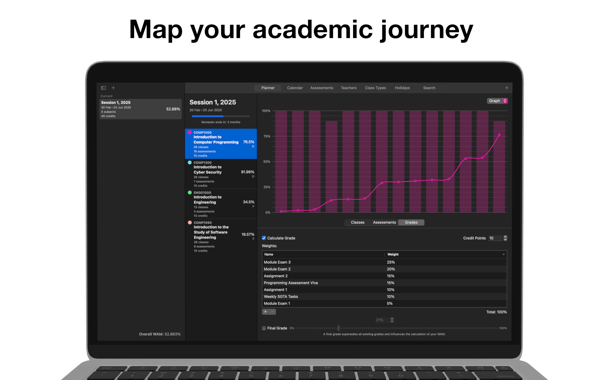

Set up the semester once.
Add term dates, subjects, credit points, classes, and assessment structure before the pressure starts building.
GradeStack brings your terms, subjects, assessments, classes, and grade tracking into one polished workspace so you can stay on top of the semester without resorting to scattered notes or spreadsheets.
Unlock widgets, notifications, JSON import/export, and advanced academic views without cluttering the core experience.

Add term dates, subjects, credit points, classes, and assessment structure before the pressure starts building.
Upcoming deadlines, remaining marks, and schedule context stay visible so you can prioritise the next move with less guesswork.
Custom scales, GPA systems, exclusions, overrides, and flexible grading modes help GradeStack match how your course actually works.
GradeStack is designed around the real rhythm of academic life: planning terms, staying on schedule, understanding grades, and keeping everything connected.
Define start and end dates, credit points, class structures, and assessments in one place before classes begin.
Watch subject marks, projected outcomes, WAM, and GPA update as soon as assessments are completed.
Manage single and recurring classes, assign teachers, and account for holidays without losing control of the calendar.
Set custom grading scales, GPA systems, exclusions, and ascending or descending grading modes to match your program.
Dashboards, gauges, and visual trends make it easier to understand what is finished, what remains, and how performance is shifting.
Keep data aligned across your Apple devices with iCloud, then use import and export tools when you need extra control.
Move through the core workflows, from long-range planning to the schedule, assessment, grading, and sync tools you use every week.
GradeStack is built to support the whole semester instead of solving just one narrow problem.
Build the structure once so the rest of the semester is easier to manage and review.
Stay grounded in what is due next instead of hunting through multiple apps or notes.
GradeStack recalculates your standing so you can make better decisions about the work that remains.
Keep your semester plan, schedule, assessments, and grade tracking in one place with a layout designed to stay calm under pressure.